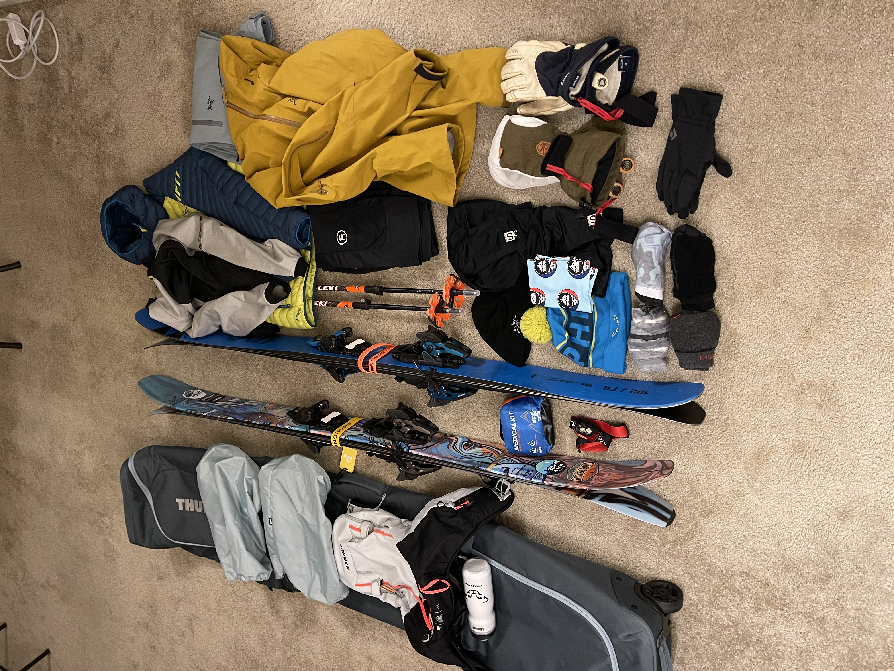
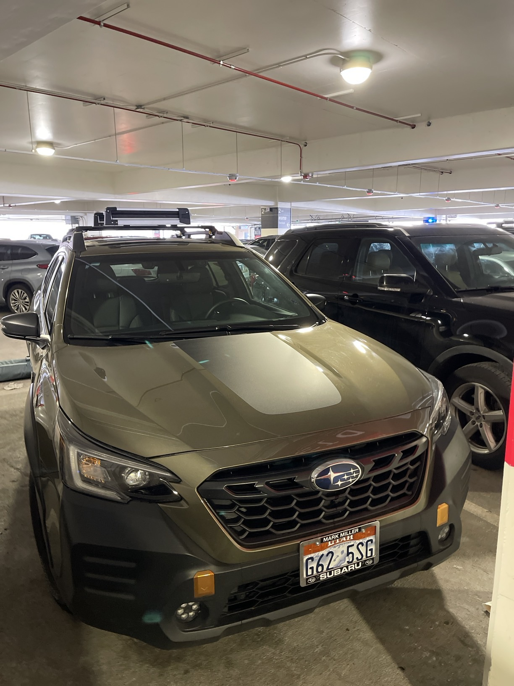
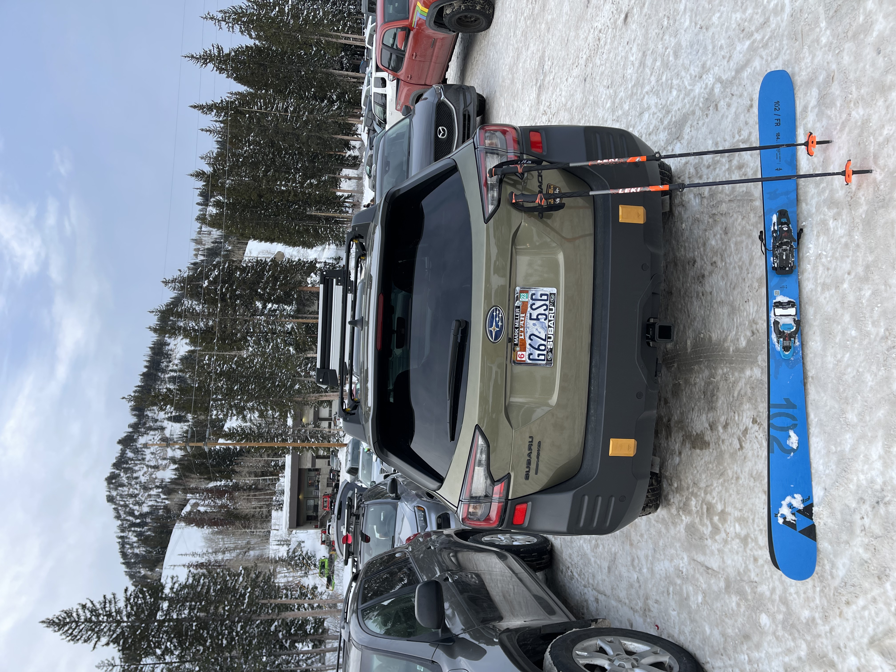
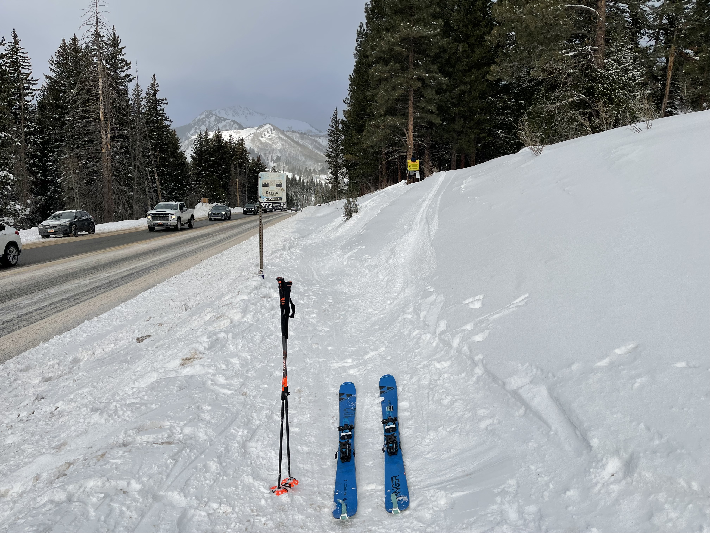
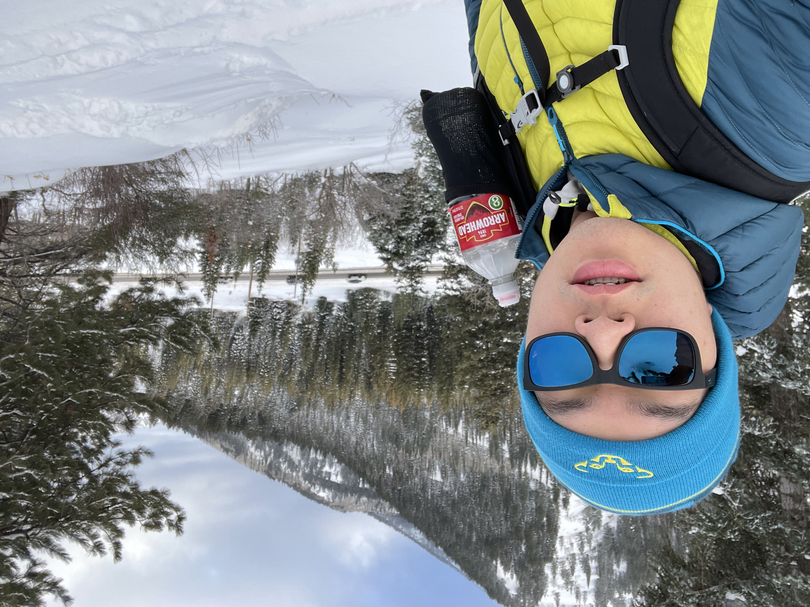
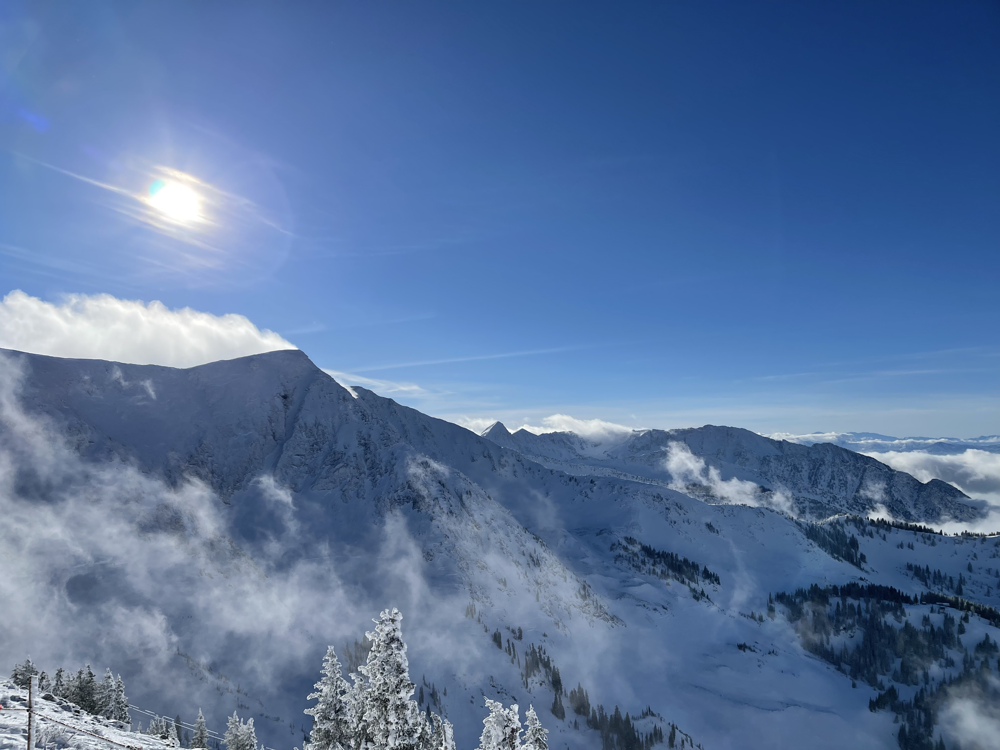
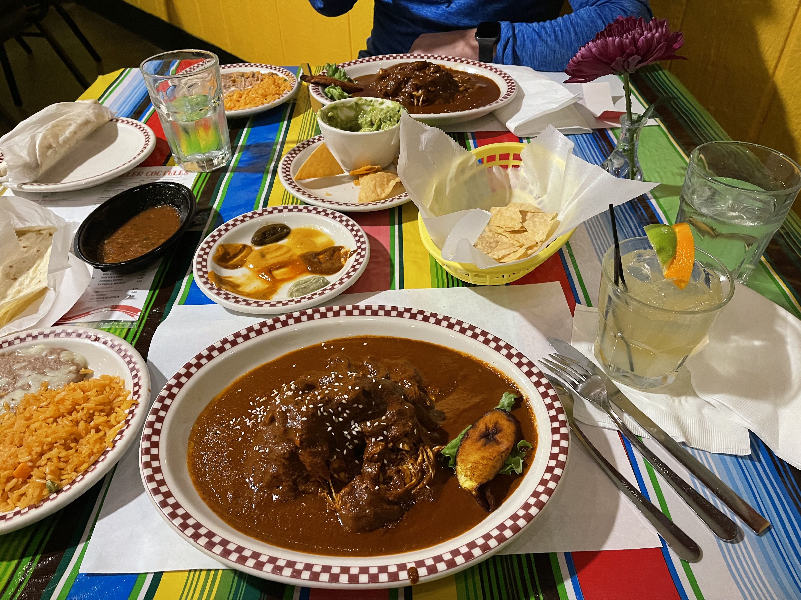
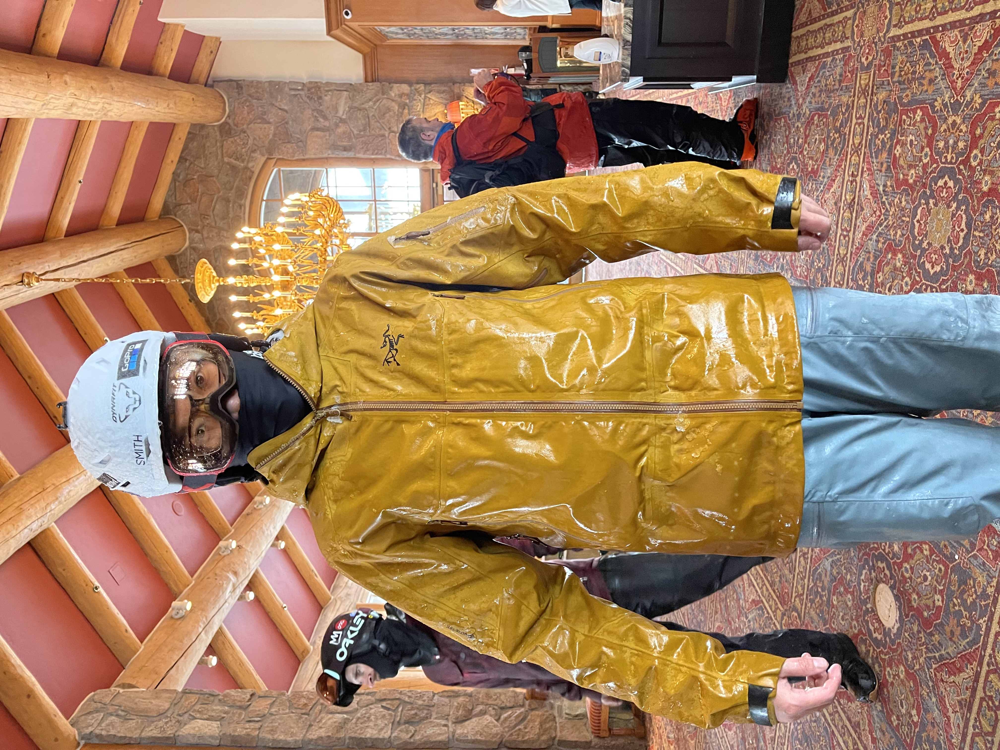

This was my first ski trip that began with a flight instead of a
drive. I returned to two of my favorite ski resorts in the U.S.,
Alta and Snowbird, and was lucky enough to enjoy some early-season
powder along with Utah's seemingly endless sunshine.

Packing for the trip made me nostalgic. I miss living out West,
where a ski resort was just a drive away.

I picked up the car for the trip. Its 2.4-liter turbocharged
flat-four engine was smooth and impressively powerful.

Heading straight to Brighton after landing!

A morning ski tour.

A beautiful morning in Little Cottonwood Canyon.

The view from Snowbird's summit.

I enjoyed authentic pollo en mole at Red Iguana. I highly
recommend this restaurant if you're ever in Salt Lake City!

Pouring rain at Snowbasin. I thought Utah was known for dry snow
:P